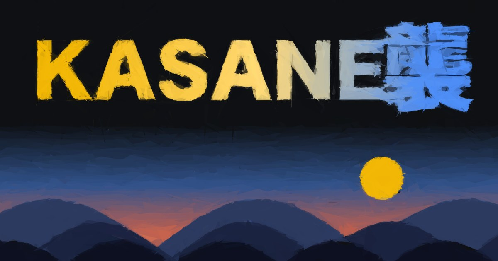

本期首选 · 数据变成空间
KASANE 襲
CURRENT ISSUE
不止看作品。
也看它能解决什么。
用途类型回答“适合做什么”，技术机制回答“如何实现”。价值判断单独标注，不把灵感推成已实现的商业结果。
正在载入本期案例…
CURATORIAL NOTE
让人理解、选择、参与或创造。
这才是效果之后的价值。
品牌识别、知识理解、创作效率都可以是价值。但能提出应用方向，不代表已经带来收入、转化或降本；每个判断都需要落地条件与真实验证。
PRINCIPLE MAP
五种机制，读懂实验前端。
技术机制与用途类型分开。它们解释内容如何转化为体验；点选任一机制，可与下方用途分类交叉筛选。
TYPES & VALUE
先看用途，
再看实现。
65 个公开案例，按主要用途整理。一个作品可能有多种机制，但分类不等于它已经有商业成果。
正在载入研究档案…
ABOUT VIBE FRONTIER
从“看起来很酷”，走到“知道为什么成立”。
VIBE FRONTIER 是 AI 造物社的分享与共学媒介。我们从公开作品出发，同时讨论用途、适用对象、应用价值、技术机制与落地限制。
不替作者补写技术，不把价值假设当商业成果，也不把灵感误认成自己的作品。是否值得做，要回到目标用户与真实任务验证。
回到本期